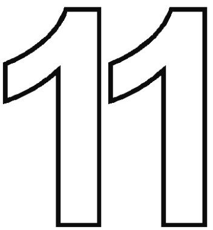
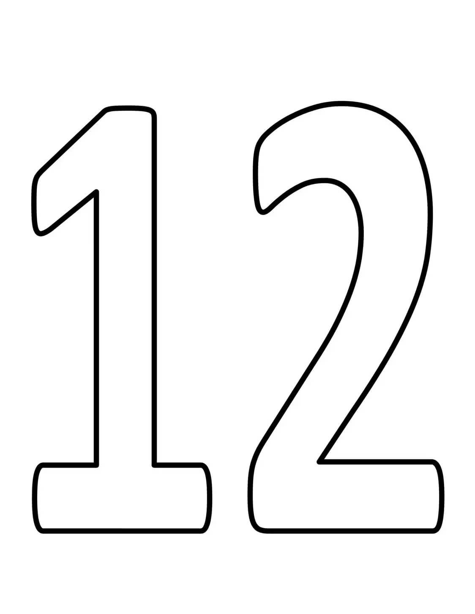
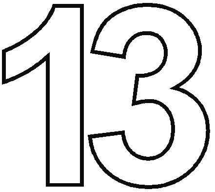
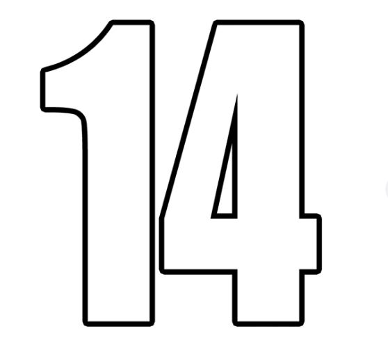
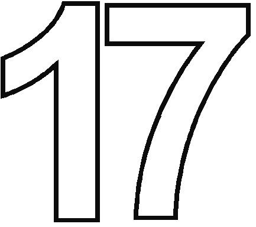
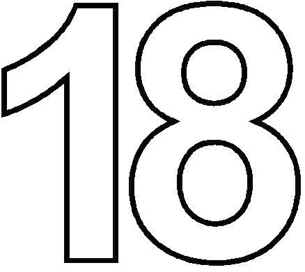
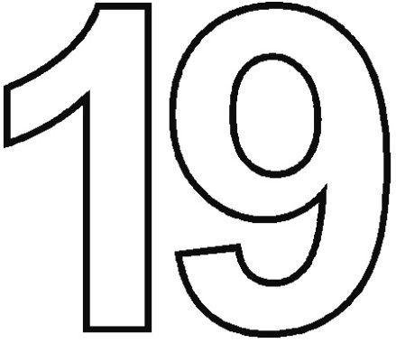
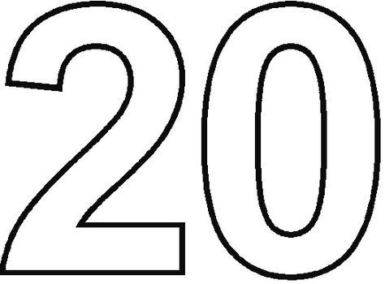
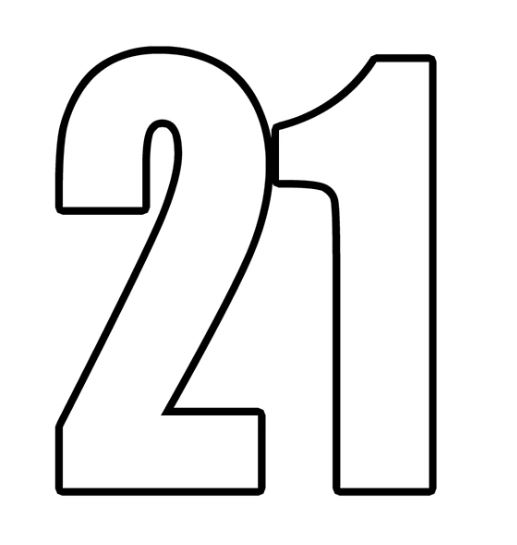

Ejemplo H3

Texto en párrafo

salto

- Uno
- Dos
- A
- B
El saber es poder
Texto citado en bloque
print("Hola")
| Etiqueta | Descripción | Visualización | Enlace |
|---|---|---|---|
| <h1> a <h6> | Encabezados de mayor a menor importancia. Se usan para organizar el contenido de manera jerárquica, mejorar la lectura y ayudar a los motores de búsqueda a interpretar la estructura de la página. | Ejemplo H3 |
|
| <p> | Define un párrafo de texto, agrupando oraciones relacionadas para mejorar la legibilidad y mantener una estructura clara en el contenido web. | Texto en párrafo |
|
| <hr> | Línea divisoria horizontal utilizada para separar secciones de contenido, aportando claridad visual y ayudando al usuario a diferenciar ideas o temas dentro de la página. | ||
| <br> | Salto de línea que permite continuar el texto en la siguiente línea sin crear un nuevo párrafo. Ideal para direcciones, poemas o listas cortas dentro de un bloque de texto. | Texto con salto |
|
| <strong> / <b> | Texto en negrita. <strong> indica importancia semántica, mientras que <b> solo cambia la apariencia visual sin significado adicional. | Negrita | |
| <i> | Texto en cursiva, usado para resaltar palabras, nombres de obras o términos técnicos, aportando énfasis visual sin alterar la semántica del contenido. | Cursiva | |
| <u> | Subraya el texto para destacar información importante o enlaces, ayudando a resaltar elementos dentro del contenido. | Subrayado | |
| <ol> con <li> | Lista ordenada que organiza elementos de manera secuencial o jerárquica, ideal para instrucciones, pasos o numeraciones. |
|
|
| <ul> con <li> | Lista desordenada que muestra elementos sin un orden específico, útil para enumerar opciones, características o conceptos de manera clara. |
|
|
| <mark> | Resalta texto con un fondo de color para llamar la atención sobre palabras o frases importantes dentro del contenido. | Importante | |
| <small> | Muestra texto en un tamaño reducido, generalmente para notas al pie, disclaimers o información secundaria sin restarle importancia al contenido principal. | Texto reducido |  |
| <em> | Texto enfatizado, normalmente se muestra en cursiva, utilizado para dar importancia o énfasis a palabras o frases específicas dentro del contenido. | Énfasis |  |
| <cite> | Indica el título de una obra, documento o fuente, útil para referencias, citas bibliográficas o mencionar autores y publicaciones. | Don Quijote |  |
| <q> | Etiqueta para citas cortas, normalmente en línea con el texto, indicando que se trata de palabras citadas de otra fuente. | El saber es poder |
 |
| <blockquote> | Cita en bloque, utilizada para frases o párrafos largos tomados de otra fuente, separando visualmente el contenido citado del resto del texto. | Texto citado en bloque |
|
| <abbr> | Abreviatura con significado, que al pasar el cursor sobre ella muestra su expansión completa, ayudando a clarificar siglas o acrónimos. | HTML | |
| <code> | Etiqueta para mostrar fragmentos de código, útil para ejemplos de programación o comandos, preservando el formato y estilo de programación. | print("Hola") |
 |
| <sub> / <sup> | Subíndices y superíndices, utilizados en fórmulas, expresiones matemáticas, referencias químicas o notas al pie de página. | H2O, x2 |  |
| <del> | Texto eliminado, usado para mostrar contenido que ha sido removido o reemplazado, útil en revisiones de documentos o cambios de contenido. |  | |
| <img> | Inserta imágenes en la página web, permitiendo ilustrar contenido, mostrar gráficos o fotos, y enriquecer visualmente la información presentada. | |
 |
| <iframe> | Marco embebido que permite mostrar otra página web o contenido externo dentro de tu página, útil para videos, mapas o widgets interactivos. |  | |
| <video> | Permite incrustar contenido de video directamente en la página web, compatible con diferentes formatos y controles de reproducción para mejorar la experiencia multimedia. |